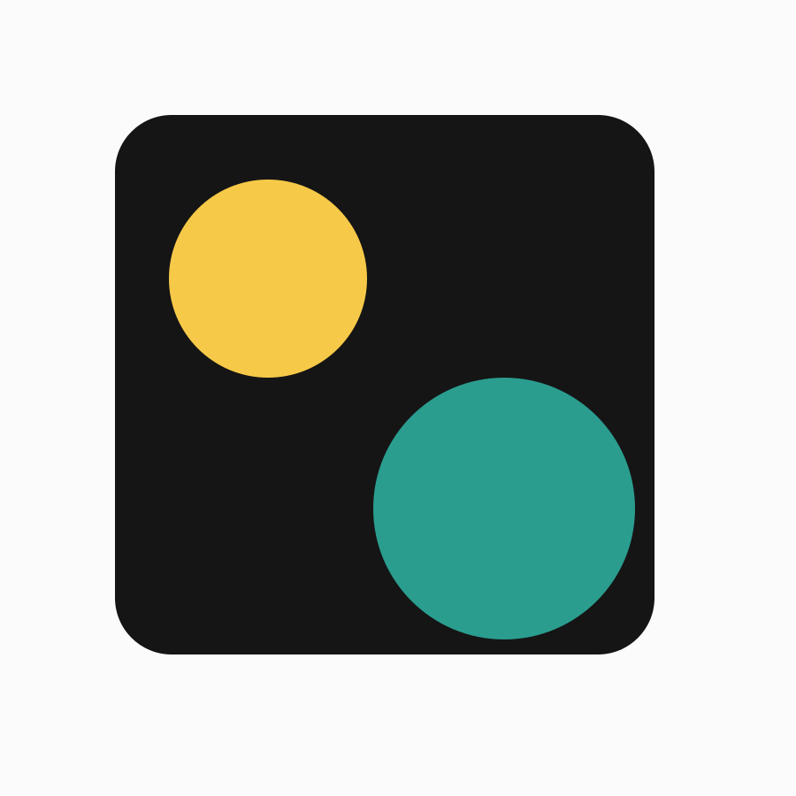

Northline Studio
This placeholder case study describes a brand system built around clarity, scale, and a calm visual rhythm.
The project includes identity sketches, publication rules, image direction, and a flexible set of components for digital and printed applications.
